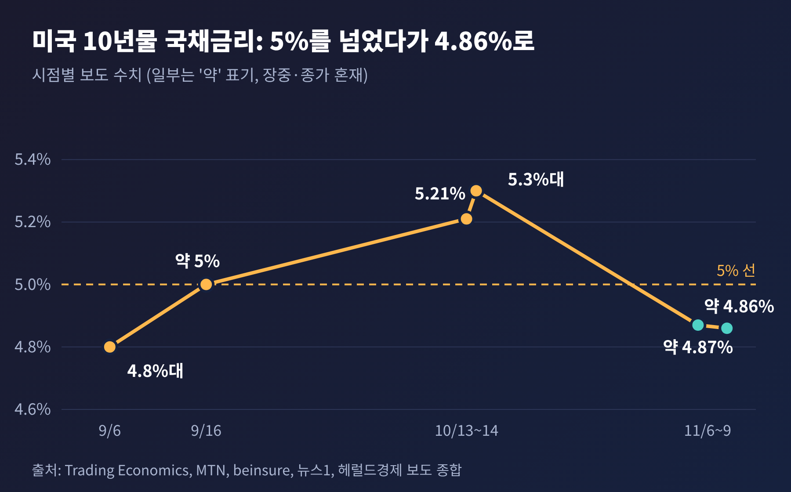
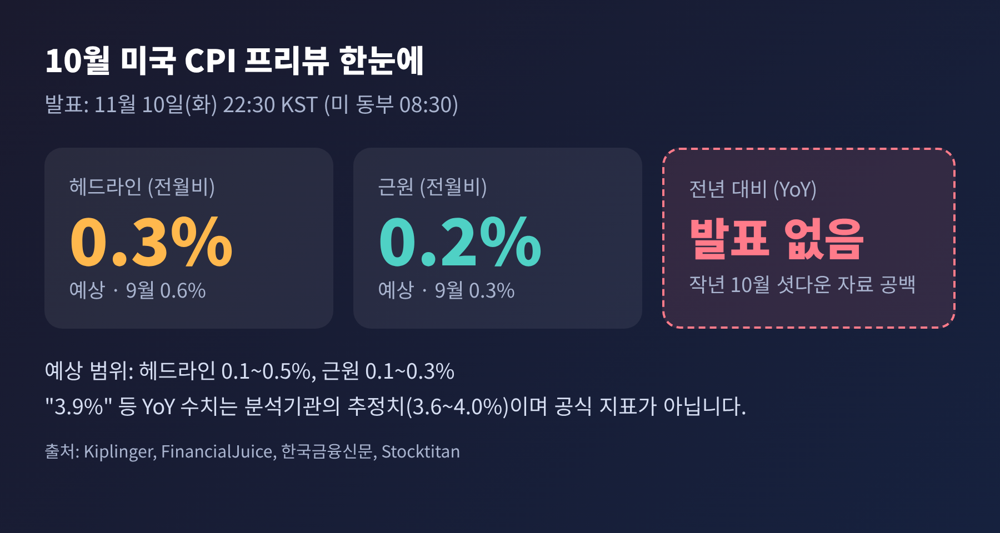
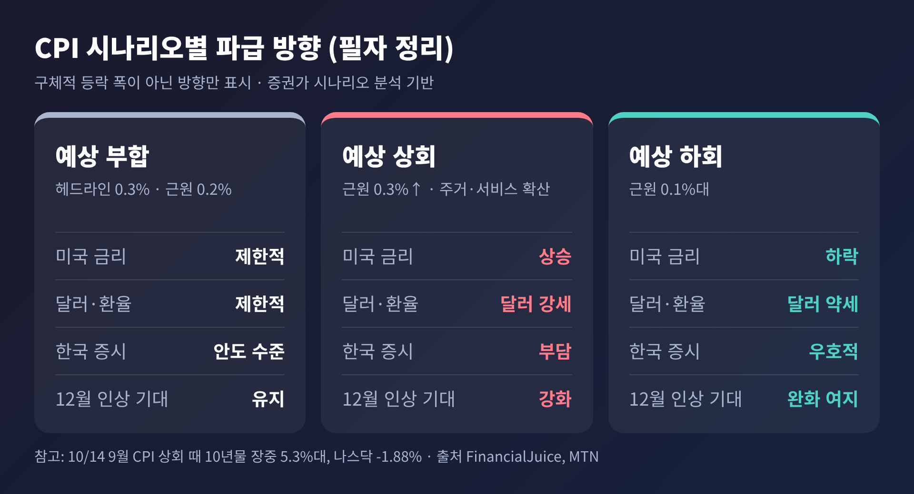
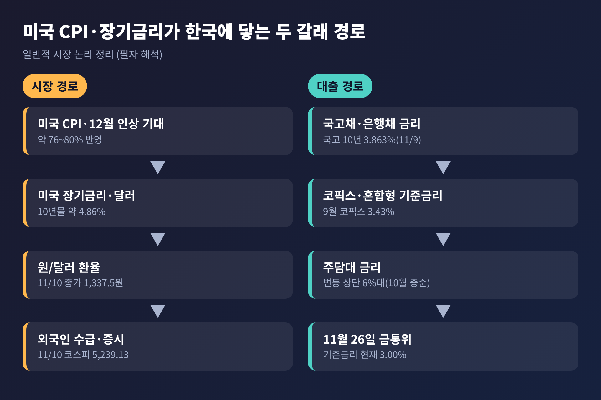
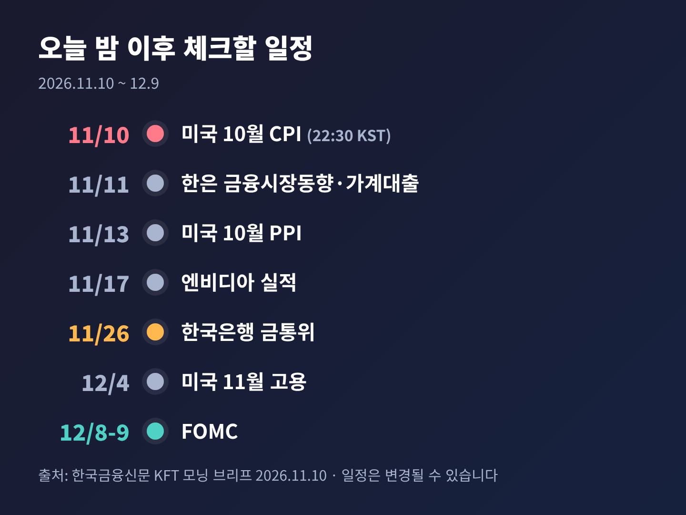

미국 10년물 금리 4.86%, 오늘 밤 CPI가 코스피·환율·주담대에 던질 변수

오늘은 미국 10년물 국채금리와 오늘 밤 발표되는 10월 소비자물가지수(CPI)를 짚어 보려 합니다. 한국 증시, 환율, 주택담보대출 금리, 11월 26일 금융통화위원회까지 이어지는 경로를 정리했습니다. 이 글은 한국시간 11월 10일 저녁 8시 무렵, 발표 전에 쓴 프리뷰입니다.
3줄 요약
- 미국 10년물은 9~10월에 5%를 넘나들었다가, 지금은 4.86% 안팎까지 내려왔습니다. 11월 10일 현재 "5% 문턱"이라기보다 "5% 아래로 한 걸음 물러선" 상태입니다.
- 10월 CPI는 한국시간 오늘 밤 10시 30분에 나옵니다. 시장 예상은 전월 대비 헤드라인 0.3%, 근원 0.2%이며, 이번에는 전년 대비 수치가 공식 발표되지 않습니다.
- 결과에 따라 12월 미국 금리 인상 기대, 달러, 환율, 외국인 수급이 움직이고, 그 파장이 주담대 금리와 11월 26일 금통위 해석까지 닿습니다.
■ 무슨 일이 있었나: 5% 위에서 4.86%로
미국 10년물 국채금리는 올가을 내내 5% 언저리를 오갔습니다. 9월 16일 무렵에는 5% 안팎에서 2007년 7월 이후 최고 수준에 가까웠고, 10월 14일 9월 CPI가 예상보다 높게 나온 직후에는 장중 5.3%를 넘어섰습니다. 그러다 11월 6일 고용지표 직후에는 약 4.87%, 오늘 새벽 보도 기준으로는 약 4.86%였습니다.

먼저 짚어 둘 점이 있습니다. 일부 보도 제목에 쓰인 "10년물 5% 문턱"은 사실 9월 초 상황을 그린 표현입니다. 당시 10년물은 4.8%대였고, 미국산 원유(WTI)는 배럴당 90달러를 웃돌았습니다. 지금은 5%를 이미 한 번 넘었다가 내려온 뒤라는 점에서 맥락이 다릅니다.
내려온 이유는 크게 둘로 보입니다. 하나는 유가입니다. 미국과 이란이 협상을 이어 가면서 브렌트유가 직전 한 주 동안 16% 떨어졌고, 어제는 배럴당 92.57달러로 마감했습니다. 다른 하나는 위험자산 선호의 회복입니다. 어제 미국 증시는 S&P500이 2.35%, 나스닥이 2.74% 올랐습니다.
그렇다고 금리 부담이 사라진 것은 아닙니다. 11월 6일 발표된 10월 비농업 고용은 16만 5천 명 증가로, 시장 예상(5만 9천~6만 5천 명 안팎)의 약 세 배였습니다. 이 결과 12월 연준의 25bp 인상 가능성은 소스에 따라 76%에서 80% 안팎까지 반영되어 있습니다. 연준 기준금리는 현재 3.75~4.00%입니다.
■ 오늘 밤 CPI, 이번에는 무엇이 다른가
이번 CPI는 평소와 다른 점이 하나 있습니다. 작년 가을 미국 정부 셧다운 때문에 2025년 10월 물가 자료가 수집되지 않았습니다. 그래서 노동통계국은 10월 CPI의 전년 대비 상승률을 공식 발표하지 않습니다. 월간 변화만 나옵니다.
일부 매체가 전한 "10월 CPI 3.9%" 전망은 그래서 조심해서 읽어야 합니다. 분석기관이 대체 지수로 계산한 추정치이며, 기관마다 3.6~4.0%까지 편차가 있습니다. 공식 지표가 아니라는 뜻입니다.

기관별 전망은 대체로 한곳에 모여 있습니다. 월스트리트 주요 기관은 헤드라인 0.2~0.3%, 근원 0.2~0.3% 사이를 제시했습니다. 바클레이스는 "10월 CPI가 물가 둔화를 보여줄 것으로 예상한다"고 했고, BMO는 "차분한 CPI 한 번으로 FOMC가 안도하기는 어렵다"고 말했습니다. 에너지 가격은 10월에 누그러졌겠지만 식품과 근원 상품, 주거와 서비스는 끈질길 수 있다는 시각입니다.
직전 9월 수치와 비교하면 시장의 눈높이가 보입니다. 9월은 헤드라인 0.6%, 에너지 5.2%, 휘발유 9.1% 상승이었습니다. 이번에 0.3%가 나오면 속도는 절반으로 줄지만, 여전히 연율로 환산하면 낮은 수준은 아닙니다. 이 환산은 필자의 해석이며, 시장이 그렇게 계산한다고 단정할 수는 없습니다.
■ 시나리오별로 보는 파급 경로
핵심은 결과 자체보다 시장이 기대한 값과의 차이입니다. 아래는 증권가의 시나리오 분석을 바탕으로 방향만 정리한 것입니다. 구체적인 등락 폭을 예측한 자료는 확인되지 않았습니다.

예상에 부합한다면 시장은 큰 방향을 바꾸지 않을 가능성이 큽니다. 9월의 충격이 이어지지 않았다는 안도감 정도가 남겠지만, 12월 인상 기대는 크게 흔들리지 않을 것입니다. 월스트리트 일부 기관은 근원이 약하게 나와도 12월 인상 전망을 유지한다고 밝혔습니다.
예상을 웃돈다면 이야기가 달라집니다. 근원이 0.3% 이상으로 오르고 주거와 서비스로 번지는 모습이 확인되면, 금리는 올라가고 달러는 강해지며 금리에 민감한 주식이 흔들리는 쪽입니다. 지난 10월 14일에 10년물이 하루 만에 장중 5.3%를 넘은 일이 선례입니다. 당시 나스닥은 1.88% 하락했습니다.
예상을 밑돈다면 반대입니다. 금리 하락과 달러 약세가 겹치면서 위험자산에 우호적인 환경이 될 수 있습니다. 다만 한 번의 둔화로 연준이 기조를 바꾸기는 어렵다는 것이 다수 기관의 설명입니다.
■ 왜 한국 시장이 민감한가
그렇다면 미국 장기금리는 왜 한국의 코스피와 환율에 직결될까요. 경로는 비교적 단순합니다. 미국 금리가 오르면 달러 자산의 매력이 커지고, 외국인은 신흥국 주식에서 자금을 빼기 쉬워집니다. 원화는 약세 압력을 받습니다. 이 해석은 일반적인 시장 논리이며, 이번 주 상황에서도 비슷한 모습이 나타났습니다.

수치로 보면 이렇습니다. 11월 9일 코스피는 5,018.85로 3거래일 연속 내려 2월 2일 이후 가장 낮았고, 외국인은 7거래일 연속 순매도였습니다. 환율은 그날 장 초반 1,363원까지 열렸다가 1,347.1원에 마감했습니다. 반면 오늘은 반도체가 이끌며 코스피가 4.39% 오른 5,239.13으로 마쳤고, 장중 5,300을 넘어 매수 사이드카가 발동됐습니다. 환율은 1,337.5원으로 이틀 새 19.1원 내렸습니다.
오늘 반등은 한 가지로 설명되지 않습니다. 신한투자증권 강진혁 연구원은 과매도 인식이 반등을 이끌었고, CPI와 코어위브 실적에 대한 경계가 상승폭을 일부 덜었다고 설명했습니다. 외국인 순매수 규모는 매체에 따라 약 3,500억~4,000억 원대로 다르게 집계됐습니다. 어느 쪽이든 8거래일 만의 매수 우위입니다.
기억해 둘 사실이 있습니다. 지난 9월 초 코스피는 6,600대였습니다. 5,000선 공방은 지수가 크게 낮아진 자리에서 벌어지고 있다는 뜻입니다. 11월 6일에는 개장 직후 서킷브레이커까지 발동됐고, 금융위원회는 신용융자 담보비율 의무를 내년 1월 31일까지 한시 면제했습니다. 변동성이 큰 장에서는 CPI 한 번이 평소보다 크게 작용할 수 있습니다. 이 또한 필자의 해석입니다.
■ 주담대 금리와 11월 26일 금통위
가계에는 주택담보대출 금리가 가장 직접적입니다. 10월 중순 기준으로 주요 시중은행의 변동형 주담대 상단은 6%를 넘었습니다. KB국민은행 4.64~6.04%, 우리은행 5.00~6.20%, NH농협은행 4.68~6.48%입니다. 변동형은 코픽스에 연동되는데, 9월 신규취급액 코픽스는 3.43%로 한 달 새 0.25%포인트 올랐습니다. 2022년 11월 이후 가장 큰 상승 폭입니다.
KB국민은행에서 3억 원을 30년 원리금균등으로 빌린 경우, 상단 금리 기준 월 상환액은 약 175만 8천 원에서 180만 6천 원으로 늘었습니다. 월 4만 8천 원 안팎입니다. 다만 11월 현재의 은행별 금리와 10월 코픽스는 이번 조사에서 확인하지 못했습니다.
혼합형과 고정형은 은행채 5년물 금리를 따라갑니다. 이 금리는 9월 15일 4.655%로 연중 최고였습니다. 한국 국고채 10년물은 11월 9일 3.863%였습니다. 단순 계산으로 미국 10년물(약 4.86%)과의 차이는 약 1%포인트입니다. 이 격차 계산은 필자가 한 것으로, 두 수치의 기준 시점이 조금 다릅니다.
한국은행은 10월 22일 기준금리를 연 3.00%로 만장일치 동결했습니다. 7월과 8월 연속 인상 뒤 숨고르기였고, 총재는 긴축 기조가 끝나지 않았으며 추가 인상 시기와 속도는 데이터를 보고 정하겠다고 했습니다. 11월 26일 금통위에서는 경제전망도 수정됩니다.
이 지점에서 오늘 밤 CPI가 연결됩니다. 미국 물가가 예상보다 강해 12월 인상 기대가 굳어지면, 한국은행이 서둘러 긴축을 거두기는 어려워지고 추가 인상 논쟁이 이어질 수 있다고 봅니다. 이는 필자의 해석입니다. 반대로 물가가 둔화하면 긴장은 풀리지만, 국내 물가와 집값, 가계부채 흐름이 따로 변수가 됩니다. 9월 가계대출은 2조 2천억 원 줄었지만 주담대는 3조 3천억 원 늘었고, 서울 아파트값은 0.74% 올랐습니다. 금통위 결과를 지금 단정할 근거는 없습니다.
■ 전망: 오늘 밤 이후 확인할 일정
정리하면, 한국 투자자에게 중요한 것은 CPI 숫자 하나보다 그다음 일정에서 이어지는 흐름입니다.

CPI 직후에는 10년물이 4.86%에서 어느 쪽으로 움직이는지, 5%를 다시 시험하는지를 보아야 합니다. 이어 11월 13일 미국 생산자물가, 17일 엔비디아 실적이 위험 선호를 좌우할 수 있습니다. 한국에서는 11월 11일 가계대출 통계와 26일 금통위가 기다립니다. 최종 판단은 12월 8~9일 FOMC입니다.
끝으로 한 가지만 덧붙이겠습니다. 이번 CPI는 전년 대비 수치가 없는 불완전한 숫자입니다. 그래서 한 번의 결과보다 월간 흐름과 항목별 폭을 함께 읽는 편이 안전합니다. 숫자가 나온 뒤에는 이 글의 시나리오가 아닌 실제 결과를 기준으로 판단하시길 권합니다.
면책 안내: 이 글은 공개된 보도와 자료를 정리한 해설이며, 투자 권유가 아닙니다. 필자 해석으로 표시한 부분은 사실이 아닌 견해이고, 모든 투자 판단과 책임은 본인에게 있습니다. 작성 시점(2026-11-10 20시 KST) 이후 발표되는 CPI 결과는 반영되지 않았습니다.
#미국10년물 #미국CPI #국채금리 #코스피 #원달러환율 #주담대금리 #금통위 #경제뉴스